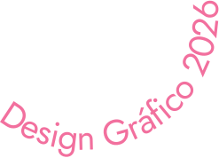
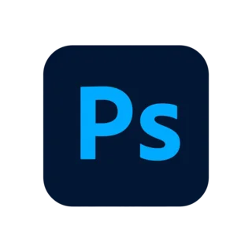
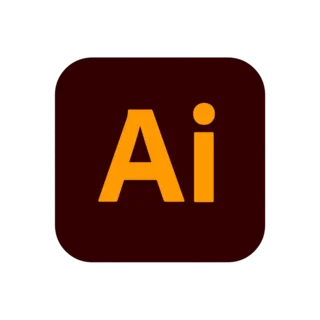
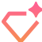
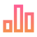
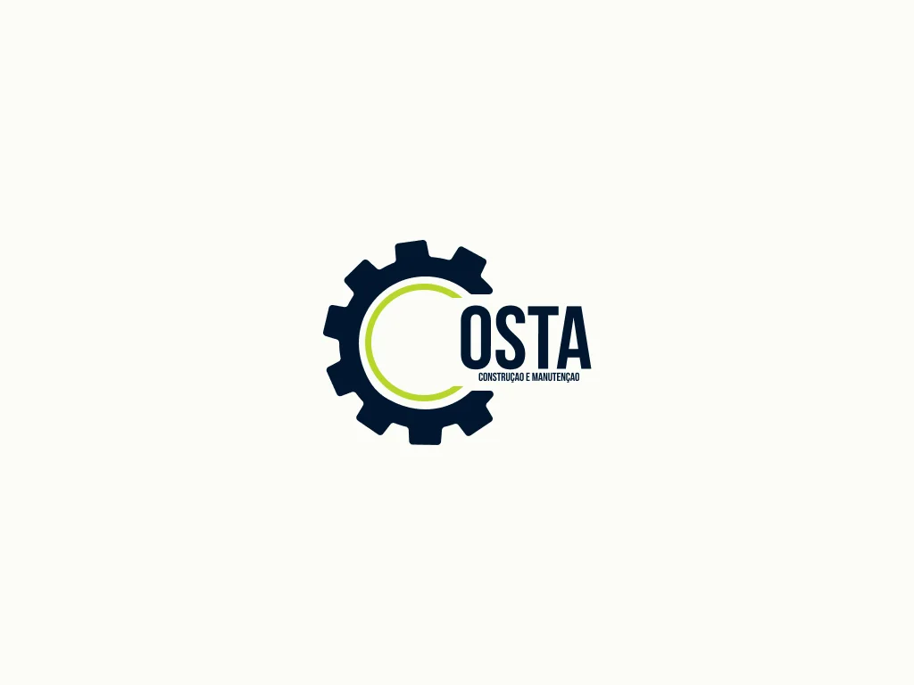
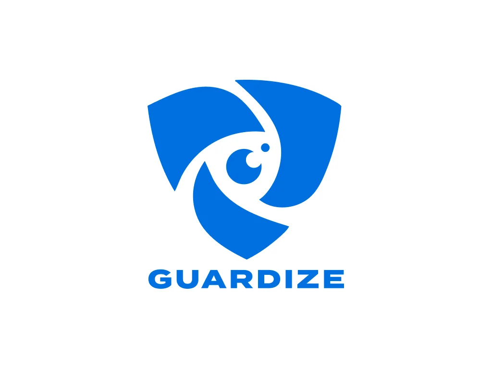
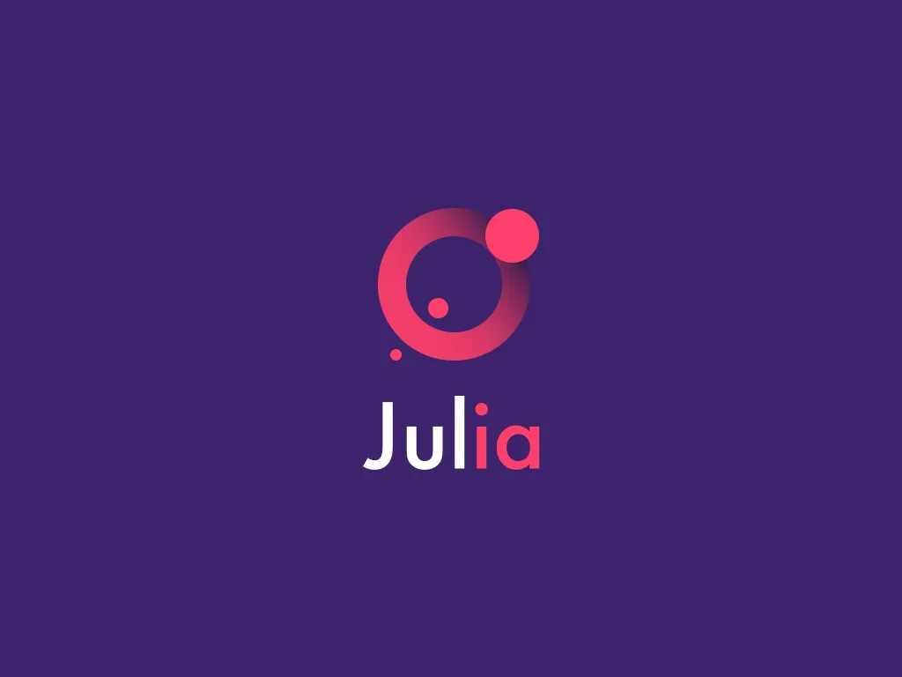
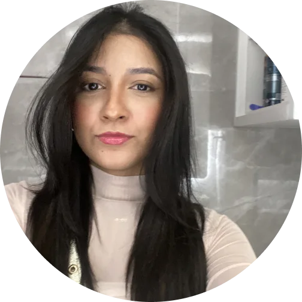

Certificados
Estudante

Olá, sou Júlia Penna
Com foco em resolver problemas através do design, criando produtos digitais que atendem às necessidades do usuário, gerando valor para o negócio. Meu processo começa com uma pesquisa de profundidade, transformando insights em protótipos de alta fidelidade (UI) e experiências fluidas. Meu conhecimento em neurociência e economia comportamental é usado para ir além do design de superfície, garantindo que cada interação seja intuitiva, estratégica e, acima de tudo, humana. Meu objetivo é me tornar uma referência na área, criando produtos que impactam positivamente a vida das pessoas.
Estudante
Busco estágios para adquirir experiência
Projetos reais







Desenvolvimento de identidade visual para a Costa, uma empresa LTDA focada em reformas e manutenções prediais e corporativas. O desafio era criar uma marca que unisse a força da construção civil com a precisão técnica da manutenção.
Identidade visual para a Devialize, uma empresa de tecnologia e software house focada em soluções digitais sob medida, automações, aplicativos, sistemas integrados e nuvem. A marca precisava comunicar tecnologia B2B com clareza, precisão e presença global.
Criação de identidade para o Guardize, serviço de monitoramento NVR em nuvem desenvolvido pela Devialize. A linguagem visual apoia uma solução de vigilância com IA, alertas em tempo real, portal web e operação por assinatura.
Identidade para Recibos, um scanner de recibos 100% local com Apple Intelligence, também desenvolvido pela Devialize. O app extrai loja, data, total, categoria e itens, mantendo busca, insights e sincronização iCloud com foco em privacidade.
Criação de identidade visual para Julia, uma assistente pessoal de IA pensada para organizar rotinas, apoiar decisões e tornar interações digitais mais próximas. A direção visual traduz tecnologia, autonomia e acolhimento sem perder clareza de uso.
Desenvolvimento de identidade para EVA, uma linha de cosméticos com linguagem leve, delicada e sensorial. O projeto explora minimalismo, bem-estar e cuidado pessoal para construir uma presença visual elegante e memorável.

More projects loading... Tem muita coisa boa vindo por aí. Se quiser saber mais sobre meu processo ou discutir uma proposta de trabalho, é só me chamar!
Agendar uma conversa